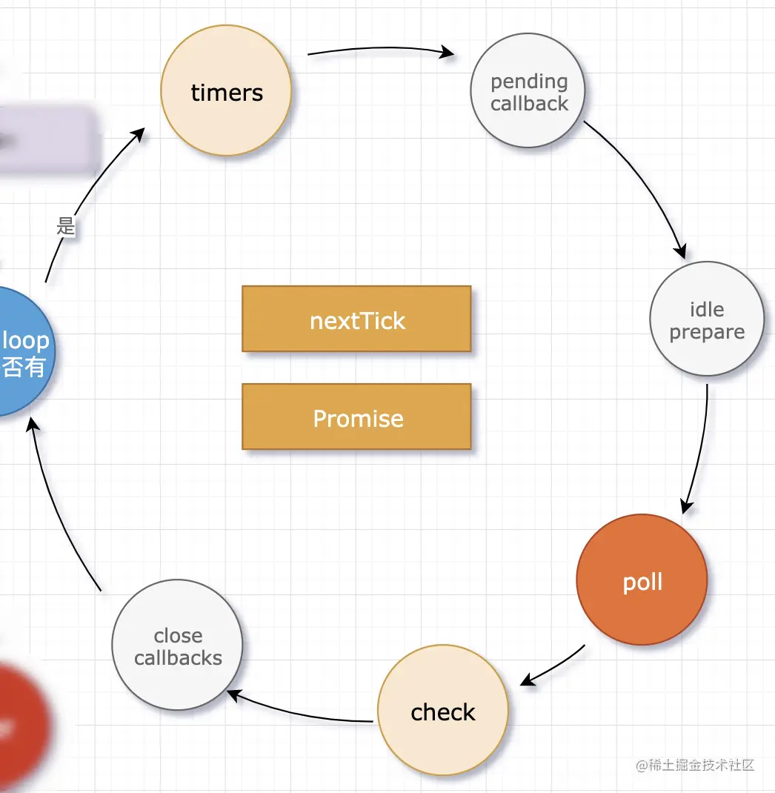

nodejs时间循环：
概述：
Node.js 做为 JavaScript 的服务端运行时，主要与网络、文件打交道，没有了浏览器中事件循环的渲染阶段。
事件环的六个阶段：

左侧 Node.js 官网展示的事件循环分为 6 个阶段，每个阶段都有一个 FIFO（先进先出）队列执行回调函数，这几个阶段之间执行的优先级顺序还是明确的。
右侧更详细的描述了，在事件循环迭代前，先去判断循环是否处于活动状态（有等待的异步 I/O、定时器等），如果是活动状态开始迭代，否则循环将立即退出。
timers（定时器阶段）
首先事件循环进入定时器阶段，该阶段包含两个 API setTimeout(cb, ms)、setInterval(cb, ms) 前一个是仅执行一次，后一个是重复执行。
这个阶段检查是否有到期的定时器函数，如果有则执行到期的定时器回调函数，和浏览器中的一样，定时器函数传入的延迟时间总比我们预期的要晚，它会受到操作系统或其它正在运行的回调函数的影响。
const now = Date.now();
setTimeout(function timer1() {
console.log(`delay ${Date.now() - now} ms`);
}, 1000);
setTimeout(function timer1() {
console.log(`delay ${Date.now() - now} ms`);
}, 5000);
someOperation();
function someOperation() {
// sync operation
while (Date.now() - now < 3000) { }
}
在我们这个示例中，假设执行完 someOperation() 函数的当前时间为 T + 3000：
- 检查 timer1 函数，当前时间为 T + 3000 - T > 1000，已超过预期的延迟时间，取出回调函数执行，继续检查。
- 检查 timer2 函数，当前时间为 T + 3000 - T < 5000，还没达到预期的延迟时间，此时退出定时器阶段。
pending callbacks
定时器阶段完成后，事件循环进入到pending callbacks阶段，这个阶段执行上一轮事件循环遗留的I/O回调。
idle, prepare
idle, prepare阶段是给系统内部使用。
poll
poll是一个重要阶段，这里有一个概念观察者，有文件I/O观察者，网络I/O观察者等，它会观察是否有新的请求进入，包含读取文件等待响应，等待新的socket请求，这个阶段在某些情况下是会阻塞的。
当 poll 阶段队列为空时，并且脚本被 setImmediate() 调度过，此时，事件循环也会结束 poll 阶段，进入下一个阶段 check。
当 poll 阶段队列为空时，并且脚本被 setImmediate() 调度过，此时，事件循环也会结束 poll 阶段，进入下一个阶段 check。
check
check 阶段在 poll 阶段之后运行，这个阶段包含一个 API setImmediate(cb) 如果有被 setImmediate 触发的回调函数，就取出执行，直到队列为空或达到系统的最大限制。
close callbacks
在 Libuv 中，如果调用关闭句柄 uv_close()，它将调用关闭回调，也就是事件循环的最后一个阶段 close callbacks。这个阶段的工作更像是做一些清理工作.
Node.js 11.x 前后差异
setImmediate(() => {
console.log('setImmediate1');
Promise.resolve('Promise microtask 1')
.then(console.log);
});
setImmediate(() => {
console.log('setImmediate2');
Promise.resolve('Promise microtask 2')
.then(console.log);
});
在 Node.js v11.x 之前，当前阶段如果存在多个可执行的 Task，先执行完毕，再开始执行微任务。基于 v10.22.1 版本运行结果如下：
setImmediate1
setImmediate2
Promise microtask 1
Promise microtask 2
在 Node.js v11.x 之后，当前阶段如果存在多个可执行的 Task，先取出一个 Task 执行，并清空对应的微任务队列，再次取出下一个可执行的任务，继续执行。基于 v14.15.0 版本运行结果如下：
setImmediate1
Promise microtask 1
setImmediate2
Promise microtask 2
事件循环 圈

一次循环要经过六个阶段：
- timers：计时器（setTimeout、setInterval等的回调函数存放在里边）
- pending callback
- idle prepare
- poll：轮询队列（除timers、check之外的回调存放在这里）
- check：检查阶段（使用 setImmediate 的回调会直接进入这个队列）
- close callbacks